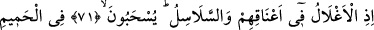
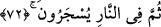
71, 72. Boyunlarında demir halkalar ve zincirler olduğu halde, sıcak suya
sürüklenecekler, sonra da ateşte yakılacaklardır.
“Boyunlarında demir halkalar…”
Âyetin başındaki “” edatı, önceki âyetin sonunda yer alan “bileceklerdir” fiilinin
zarfıdır. (Onların ne zaman bileceklerini gösterir.) Ancak “bileceklerdir” fiili hem lâfız,
hem de mânâ itibarıyla ileride gerçekleşecek olmasına rağmen, bu cümle geçmiş zamanı
konu almaktadır. Geçmiş mekânda olmasına gelince bunun olamayacağı zaten açıktır.
Tıpkı “Dün oruç tutacağım” demek gibidir ki böyle bir şey câiz olmaz. Bunun cevabı
şudur: “Bilme”nin vakti gerçek mânâda müstakbel olmakla birlikte, tenzîlen ve te’vîlen
mâzidir. Çünkü bilecekleri şey kıyâmet günü olduğu için, nasılsa kesin olarak
gerçekleşeceğinden dolayı, bunu bir nevi geçmiş zamanda bilmiş oluyorlar. Böylece “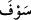:yakında” kelimesi, gerçek mânâda müstakbel anlamına sahipken, “ : hani” lafzı,
te’vil edilmesi gereken bir mâzi mânâsına sahiptir.
“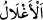, “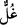” kelimesinin çoğulu olup kişinin, organları, ortasına konularak kendisiyle
sınırlandırıldığı nesnedir. “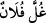, halkayla bağlandı; yâni boynuna ve ellerine demir
bukağılar, halkalar konuldu, demektir. “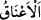 ise “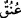 kelimesinin çoğulu olup farsçası
“gerdan”dır. Keşfü’l-esrâr’da belirtildiği üzere âyetin mânâsı şöyledir: Onların ellerine
ve boyunlarına bağlar/zincirler bağlandığında. Yani, elleri demir halkalarla boyunlarına
bağlandığı ve boyunlarında “zincirler olduğu halde…”
“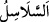, “silsile” kelimesinin çoğulu olup farsçası “zencîr”dir. Çünkü “sin”
harflerinin fethasıyla “selsele” bir şeyi bir şeye eklemek demektir. “Silsile”de nesneleri
birbirine bağlama mânâsı bulunduğu için “zincir” bu kelime ile ifâde edilmiştir.
“Sıcak suya sürüklenecekler…” “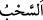 fiili, sert bir şekilde çekmek anlamındadır.
Bulut anlamındaki “sehâb” da bu kökten gelir. Çünkü rüzgâr da onu çekip götürmektedir.
“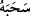 fiili, “falanca nesneyi yeryüzünde çekip götürdü” demektir ki o şey de böylece
çekilmiş olur. “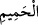 de, son derece sıcak su demektir.
Kamus’ta der ki: “Hamîm,” sıcak su demektir. Soğuk su bunun zıddıdır. Bu kelimenin
“yazın en sıcak günü” ve “ter” anlamları da vardır. Müfredât’ta da belirtildiği üzere bu
ifadede bir benzetme söz konusudur. Cümle, “bileceklerdir” fiilinin fâilinden ya da “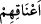 kelimesinin zamîrinden haldir. “Zincirlerle sert bir şekilde çekilip kaynar suya;
yâni cehennem ateşinin suyuyla kaynatılmış suya götürüldükleri halde” demektir. Onları
götürenler cehennem görevlileridir. Bu su son derece kaynar bir su olacaktır. Çünkü
cehennem ateşinin ancak yetmişte biri kadar sıcak olan dünya ateşiyle kaynatılmış bir
suya bile dayanılamazken, cehennem ateşinde kaynatılmış suya nasıl dayanılacak!?